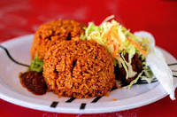

Jollof Rice

Description
Rice dishes are very common in most West-African cultures and the Nigerian jollof rice is one of many great variations.
Jollof rice itself is popular in countries such as Ghana, Nigeria, and Senegal.
Ingridients
- Red bell pepper
- Tomatoes
- Red onion
- Fresh ginger
- Vegetable stock
- Bay leaf
- Salt
- Nutmeg
- Dried thyme
- Paprika powder
- Rice
- Sunflower oil
- Scotch bonnet pepper
- Garlic
Steps
- Chop tomatoes, onions, bell pepper,
ginger, garlic, scotch bonnet pepper and puree in a blender/food processor.
- Cook the pureed mixture in a pot with hot cooking oil over medium-high heat.
Stir together and place a lid over it, reduce heat to low, and simmer for 20 minutes.
- Stir in the spices and seasonings (Paprika, thyme, nutmeg, bay leaf, and salt),
then add the rice and vegetable or meat stock and stir together.
- Place a piece of aluminium foil into the pot, covering the entire surface of the rice, then place a lid over the pot.
Cook for 20 minutes on low heat (stirring occasionally).
- Remove the lid, bin the aluminium foil and give the rice a gentle stir, then return the lid and cook for another 5 minutes